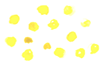
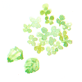
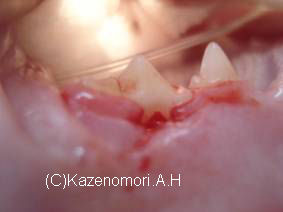
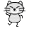

** Topic 2009年 ６月**

●ネコの歯周炎

5月末より雨がつづいているつくばですが、そろそろお空の上では梅雨の準備でしょうか？少々肌寒い感もあります。
湿気とともに、ペットのにおいが少々気になることもあるかと思います。
体臭を減らすにはやっぱりシャンプーでしょうか？

先日、入浴剤タイプのものを、我が家の愛犬に試してみました。
お湯を張り、入浴剤を入れ、じゃばじゃば！して乾かす！
洗えているのか、半信半疑でしたが、翌日から匂いが激減！被毛の状態も良く、柔らかい！！すばらしい！
病院にサンプルを用意しました。おすすめです！お試しください！
ご来院の際、『サンプルください！』と、遠慮なく言ってください。
さて、お口のご相談で比較的多いのが、『虫歯』です。
犬猫では、人の虫歯の原因菌であるStreptococcs
mutans（ミュータンス菌）の口腔内常在がすくないのです。しかし、虫歯があるんです。というお話はよく聞きます。虫歯ではないのですが、非常に似た病態が見られます。その一つをご紹介します。
『ネコの歯頸部吸収病巣』です。
写真は猫の上顎の第4前臼歯ですが、黒く穴があいた様に見えるところがあります。
歯肉は赤く腫れています。
下の、写真は、麻酔をかけて、きれいに付着物を除去し、クリーニングしたところです。
中央に、赤く出血している様に見える箇所があります。
これが、病巣で、エナメル質と象牙質が欠損してます。処置前はこのところに歯垢や歯石が付着していたので、黒くみえたのです。
このような猫の歯頸部吸収病巣は、その名の通り、歯のくび（歯冠と歯根の間）にでき、病巣が大きくなると、歯冠がぽろっと取れてしまいます。
エナメル質がなくなるので、ヒトの知覚過敏のような痛みが見られることがあります。
このような症状の場合、発見が早く、病巣が小さい場合は、レジンなどの詰め物（充てん剤）で、歯を修復することができます。しかし、病巣が大きい場合は、抜歯します。

